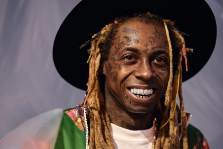

Lil Wayne

Dwayne Michael Carter Jr. (born September 27, 1982), better known by his stage name Lil Wayne, is an American rapper, singer, songwriter, record executive, entrepreneur, and actor. He is regarded by many contemporaries as one of the most influential hip hop artists of his generation, and often cited as one of the greatest rappers of all time.His career began in 1995, at the age of 12, when he was signed by Birdman and joined Cash Money Records as the youngest member of the label. He was put in a duo with label-mate B.G., at that time known as Lil Doogie, and they recorded an album, True Story, released that year, although Wayne (who was at that time known as Baby D) only appeared on three tracks. His mother and stepfather later disallowed him from continuing to record with Cash Money as his grades in school were falling and they worried that Birdman and his associates were bad influences, but he eventually persuaded them to let him return and he was again doing so by 1997; by this time he was recording as Lil Wayne
Music Career
More about the author Anant MY INSTA MY FB Mail me!! My Website
Albums
- Tha Carter III
- Peaked at #1 on 6.28.2008
- Tha Carter IV
- Peaked at #1 on 9.17.2011
- I Am Not A Human Being
- Peaked at #1 on 10.30.2010
- Tha Carter II
- Peaked at #2 on 12.24.2005
- Rebirth
- Peaked at #2 on 2.20.2010
- Like Father, Like Son
- Peaked at #3 on 11.18.2006
